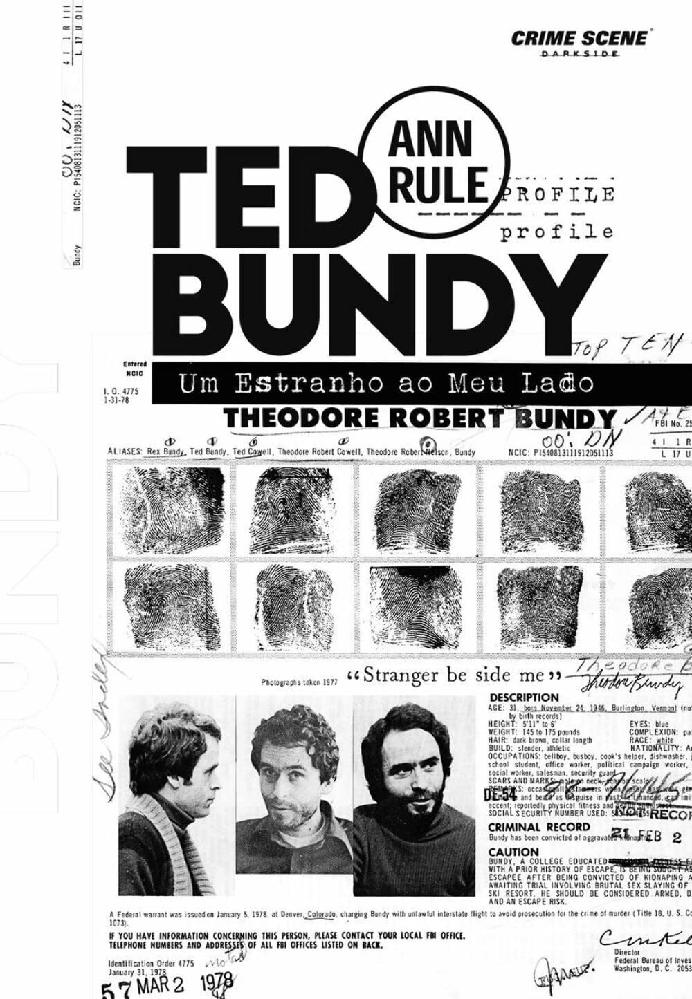

Ted Bundy: Um Estranho ao Meu Lado
Autor(a): Ann Rule
Páginas: 520
Preço: R$90,00
ou 3x de R$30,00
Sobre
Quando Ann Rule conheceu Ted Bundy em um centro de atendimento de prevenção ao suicídio, ela não fazia ideia de que aquele rapaz simpático e inteligente ― que sentava ao lado dela e de quem até chegou a receber um cartão de Natal ― se tornaria um dos serial killers mais proeminentes da história. Ted Bundy confessou ter matado ao menos 36 mulheres nos Estados Unidos durante os anos 1970. Para estudiosos do caso, a contagem final é ainda maior. Ele pode até ter salvado vidas pelo centro de prevenção, mas ceifou outras dezenas quando ninguém estava olhando. Inúmeras famílias ficaram sem respostas, e ele foi executado em 1989 na cadeira elétrica.